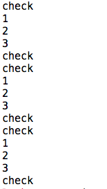
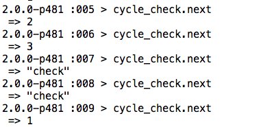

T4: How to cycle
Do you know what an enumerable is? It's a mouthful, if nothing else. To explain it simply, enumerables allow objects of a class to act differently. Today, we're going to take a look at enumerable#cycle.
Just based off the name, you can get an idea of how #cycle works. When you use #cycle on an array, it calls the block for each element and repeats it however long is specified. If you don't specify how many times to run it for, it will run forever. If you give it a negative number, it'll do nothing.

So let's test how this works. In the image above, I created an array called mic_check and then called #cycle on mic_check 3 times.
As hoped, the mic_check array was printed 3 times, demonstrating what it's like to listen to a band set up at a show. This could also be done by building a counter index that resets each time it runs the size of the collection -1 or by using an incrementer and modulo the size of the array(ex: 3.times {|x| puts mic_check[x% mic_check.size]}. But both of those methods sound messy and time consuming.
By itself, #cycle is pretty straightforward. But it can also be added to other methods, such as #reverse_each (which will run the cycle in reverse) or #map(which will cycle through the collection and place the results in an array). You can also attach it with #next, which produces the following result:
COOL, RIGHT?! If #each had been used with #next, it would have stopped after the first round, but with cycle you could just keep going forever and ever!
**As a note though, you can't just stick next on with cycle, and for this example I made cycle_check = mic_check.cycle in order to get it to work properly.